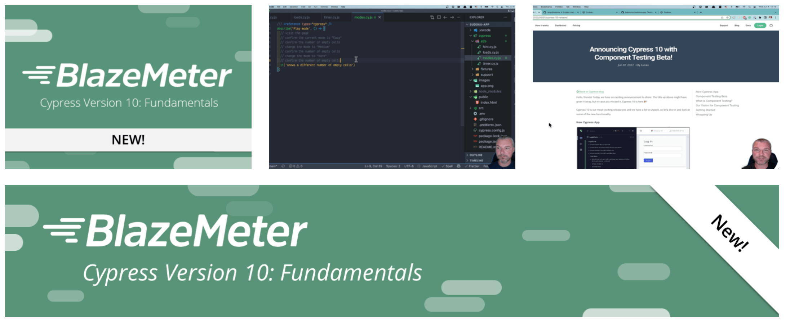

This blog post collects my tips for using Cypress v10+ which is a large step after the previous versions of Cypress. I plan to add more tips to this blog post as I use v10 more. See my post Cypress Tips and Tricks for more content; most of it still applies to Cypress v10+ tests.
- Learn Cypress v10 Fundamentals
- Register the plugins
- Launch the test runner in the desired mode
- Quickly change the testing type
- Run all specs
- Run E2E and component tests on CI
- Check the mode from the config file
- Set the user values using the env block
- Overwrite
cy.logto print to the terminal - Stub an ES6 import
- Collect the component code coverage
- Slow down Cypress tests
- Migrate your Angular tests from Protractor
- Access the file system
- Run specs in a different order
- Delete videos for passing specs
- Control React slider
- Upgrade from Cypress v9 to v12
- Dynamically control the retries
- Add TypeScript properties to the automation window object
- See all Chrome browser command line switches
- Set the subject type for an aliased value
- Use the browser name in the config
- Use a different baseUrl for a test
- Name the specs and the tests
Learn Cypress v10 Fundamentals
The best way to start learning E2E and component testing in Cypress v10 is to go through my FREE course "Cypress version 10 Fundamentals" hosted by BlazeMeter University.
- go to the BlazeMeter University Login screen
- create a free account and log in
- find my course by name "Cypress ..." and enroll

Tip: after learning the Cypress fundamentals, continue learning by taking my courses Cypress Network Testing Exercises and Cypress Plugins.
Register the plugins
Cypress v10+ has merged the cypress.json and the cypress/plugins/index.js files into a single cypress.config.js file. The plugins that you have registered before now should be registered in the e2e / setupNodeEvents method. For example, the cypress-high-resolution used to be registered like this:
1 | // cypress/plugins/index.js |
In Cypress v10 it should be registered as
1 | // cypress.config.js |
Tip: the Cypress migration wizard moves the plugins file automatically and it worked pretty well for me.
Launch the test runner in the desired mode
When using cypress open command, we have to pick the testing type and then pick the browser before we can click on the spec to run. This requires extra clicks just to get to the desired list of specs. You can shorten the process via command line arguments (which you can always look up using cypress open --help), for example to open e2e tests using the Electron browser:
1 | cypress open --e2e --browser electron |
If you want to start component testing using the Chrome browser:
1 | cypress open --component --browser chrome |
Tip: you can still use start-server-and-test to launch the application server when doing e2e testing. For example, here are my NPM scripts from the package.json file
1 | { |
If I want to run just the component tests, I use npm run comp command. If I plan to run the E2E tests, I use npm run dev script which starts the application and opens Cypress in the E2E testing mode.
Quickly change the testing type
When running the tests, you can quickly switch from E2E to Component testing and back. Click on the test type icon in the top left corner.
This brings the testing type modal dialog where you can switch to E2E testing
Run all specs
Cypress v10 has removed the "Run all specs" button. To learn how to get around it, read my blog post Run All Specs in Cypress v10.
Run E2E and component tests on CI
If you are using the Cypress GitHub Action, you need to upgrade to v4 to correctly install the dependencies and run the tests. For example, if you plan to run the component tests before running e2e tests (because it is faster), then do the following in your GitHub workflow
1 | - name: Run E2E tests 🧪 |
Similarly, if you use Cypress CircleCI Orb, you would need to use v2
1 | version: 2.1 |
Check the mode from the config file
If you are trying to decide if the user is running cypress using the cypress open or the cypress run command, you can look at the config.isTextTerminal property. It is set to true during the run non-interactive mode.
1 | module.exports = defineConfig({ |
Set the user values using the env block
Read the blog post Cypress v10 Environment Variables.
Overwrite cy.log to print to the terminal
You can overwrite the cy.log command to print the message both to the Command Log and to the terminal. See the code in the bahmutov/cypress-log-to-term repo.
1 | Cypress.Commands.overwrite('log', (log, message, ...args) => { |
1 | setupNodeEvents(on, config) { |
Stub an ES6 import
Read the blog post Stub an import from a Cypress v10 component test.
Collect the component code coverage
Read the blog post Component Code Coverage in Cypress v10.
Slow down Cypress tests
This tip works both with Cypress v9 and v10. You can slow down each Cypress command by X milliseconds using my plugin cypress-slow-down. Watch the video below:
Migrate your Angular tests from Protractor
Use the migrator.cypress.io tool from Cypress team.
Access the file system
Cypress tests run in the browser, thus they cannot access the file system directly. You have two main choices
- Use Cypress commands like cy.readFile and cy.writeFile
- Write the code that accesses the file system in the plugins / cypress config file and call it via cy.task, read the blog post Incredibly Powerful cy.task
Run specs in a different order
By default, Cypress runs the specs in the order it finds them on disk. You can adjust this order by specifying your own spec pattern.
1 | setupNodeEvents(on, config) { |
See the repo bahmutov/cypress-spec-order-example and the video Run Cypress Specs In The Order You Want.
Delete videos for passing specs
📺 watch this tip in the video Delete Cypress Videos For Passing Specs.
If you store the videos from cypress run test runs, they might take a lot of space. My preferred way is to clean up all test artifacts older than N days / weeks (because if a test fails I want to compare its video to the last passing run video). If you cannot do this, you might want to only store videos for specs with test failures. To do this, use the after:spec hook in your config file. I will keep the video file if the spec has test failures or skipped tests.
1 | import { defineConfig } from 'cypress' |
🚨 Giant warning sign: Cypress has a broken event emitter for plugins. If several plugins register
after:specevent handlers, only one will run, see issue #5240.
You can find this code in the branch delete-video of the repo bahmutov/cy-report-example. Two out of four specs are failing:
1 | Spec Tests Passing Failing |
The cypress/videos folder has only two video files
1 | $ ls -lR cypress/videos |
Very nice.
Control React slider
If you have a React component that uses onInput to listen to <input type="range" /> slider, then you can send the events yourself. 📺 Watch the video Testing React Input With Type Range By Dispatching Events
1 | Cypress.Commands.add( |
If the React component is using onChange handler, you need to be careful how you set the input's value. Because React overwrites the value set method, you need to grab the "real" method from the HTML element's prototype.
1 | const nativeInputValueSetter = Object.getOwnPropertyDescriptor( |
Upgrade from Cypress v9 to v12
Read the blog post Upgrade Cypress From Version 9 to Version 12.
Dynamically control the retries
Read the blog post Retry Or Not.
Add TypeScript properties to the automation window object
📺 You can watch this tip in the video Add Cypress AUTWindow Properties.
If you are passing custom properties using the application's window object, TypeScript might complain that these properties are not there on the DOM Window object.
1 | // spec code |
The TS will complain "Property user does not exist on type AUTWindow". The "AUTWindow" stands for "Application Under Test Window". It is defined in the cypress.d.ts types included with the Cypress NPM module.
1 | declare namespace Cypress { |
You can extend this type in your project's index.d.ts file.
1 | /// <reference types="cypress" /> |
That's it. Now your Cypress specs can set the window.user property, but only to a string value.
See all Chrome browser command line switches
When Cypress launches the browser, it sets a lot of command line flags (switches) to make sure the browser can be controlled during testing. You can see all of them by opening a Chrome tab at chrome://version/ URL.
📺 You can watch me explain this page in this short video See All Chrome Browser Command Line Flags Cypress Uses To Launch The Browser.
Tip: you can see all internal Chrome pages by opening the special URL chrome://about/
Set the subject type for an aliased value
To tell TypeScript compiler what is the aliased value you are getting, add the generic type
1 | // assumes the subject is a jQuery<Element> |
Use the browser name in the config
Let's say you want to run tests using different browsers:
1 | $ npx cypress run --browser chrome |
You want to produce a JUnit report
1 | const { defineConfig } = require('cypress') |
Can you save the report that includes the browser name like results/my-test-output-chrome.xml? How can you determine the browser name inside the config file?
Unfortunately, there is no Cypress.browser object in the config Node.js process. You can look into the config object passed into setupNodeEvents callback
1 | setupNodeEvents(on, config) { |
This outputs a lot of values, but the browser argument is not included (just like the --spec is not included, see 26032)
1 | { |
The only way workaround I found is to pass the browser name in the command again via --env argument:
1 | $ npx cypress run --browser chrome --env browser=chrome |
We can see all env values in the config.env object and use them to return modified config.
1 | const { defineConfig } = require('cypress') |
Now we get the report with the browser name in its filename:
1 |
|
See the source code in the repo bahmutov/cypress-browser-name.
Use a different baseUrl for a test
Imagine you are testing the customer site. You set the baseUrl in the config file:
1 | const { defineConfig } = require('cypress') |
But there is a second admin site and you need to test a few features there. How do you change the baseUrl? Set it in the single test or in a suite of tests!
1 | it('works', { baseUrl: 'https://admin.mysite.com' }, () => { |
See Configuration page to see all parameters you can set in the config object.
Name the specs and the tests
If a test fails, you can find its source code using the spec filename and the full name of the test. For example,
1 | describe('Parent suite', () => { |
If the test "works" fails, Cypress outputs the name of the spec cypress/e2e/spec-a.cy.js and the full name of the test which is the concatenation of the parent suite names and the test's own title: Parent suite Inner suite works. At Mercari US we use TestRail test management system via cypress-testrail-simple plugin. Each test title starts with C1234... test case ID, for example.
1 | describe('Parent suite', () => { |
Often when the test fails, we simply search for the string C12340004 to quickly go to that test. But in general, I would use the spec filename plus the test title combination without adding any additional unique ids.